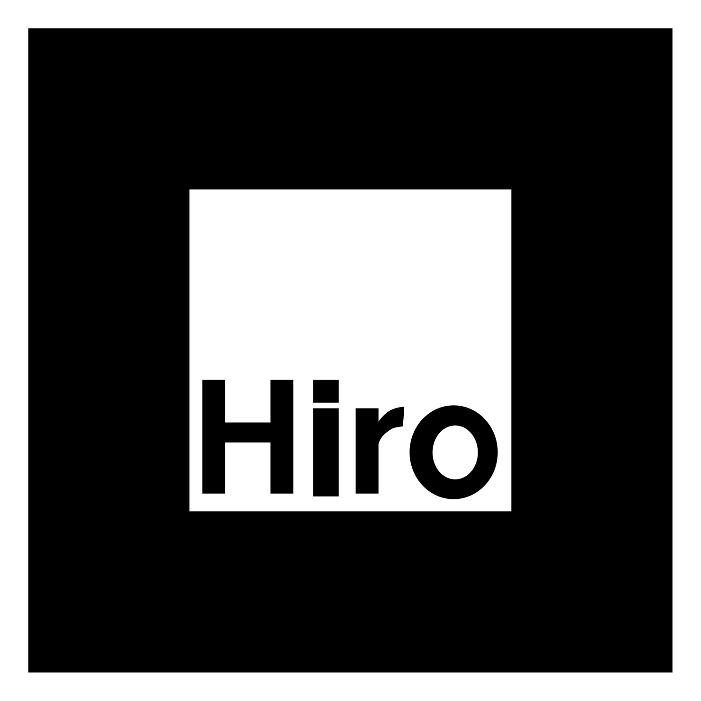

📷 将摄像头对准下方的 Hiro 标识卡
· v2
🖨️ 打印 Hiro 标识
正在启动…
3D 预览模式 · 鼠标 / 手指拖拽旋转
关闭
Hiro 标识 · 打印后对准摄像头即可体验 AR

打印方法：右键点击上方标识图片 → 「图片另存为」→ 用图片查看器打印（建议 A4，标识宽度约 8—10 厘米）
摆放：将标识平放在桌面，摄像头从上方约 30 cm 距离对准
注意：首次使用请在浏览器地址栏允许摄像头权限；手机需用 localhost 或 https 访问
← 返回主页
正在加载青铜鼎模型…